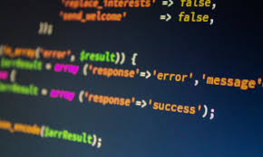

Digitalni alati sve više mijenjaju način učenja u školama
Škole sve češće uvode interaktivne sadržaje, online materijale i digitalne platforme u redovitu nastavu.
Welcome to BBC.com
Thursday, 16 May
Škole sve češće uvode interaktivne sadržaje, online materijale i digitalne platforme u redovitu nastavu.
Sigurnost podataka i povjerenje korisnika postaju jedan od glavnih prioriteta suvremenog poslovanja.

Unatoč brojnim alatima za izradu weba, mnogi developeri i studenti i dalje biraju vanilla pristup.

Publika je pratila izjednačen dvoboj u kojem je konačan rezultat odlučen tek u završnici susreta.
Sportski timovi sve više koriste podatke za planiranje treninga, taktiku i prevenciju ozljeda.
Uprave klubova i sportski direktori već sada analiziraju moguće dolaske i odlaske igrača.